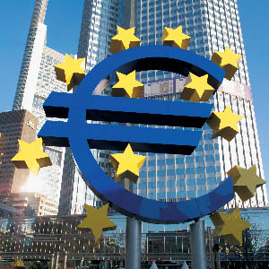

19/03/11 En el 25º aniversario, el Real Instituto de Estudios Europeos incorpora sesiones de trabajo en Fráncfort a su Máster en Unión Europea

Teniendo en cuenta la situación del euro y los cambios que se están produciendo, así como el relevante papel del Banco Central Europeo, ha decidido que las sesiones intensivas del Programa Máster Profesional en Unión Europea, que se celebran en Bruselas, Estrasburgo, Luxemburgo y Madrid, se extiendan también a Francfort. La primera beneficiada será la Promoción Príncipe Felipe (2010-2011)Fotografía: Banco Central Europeo